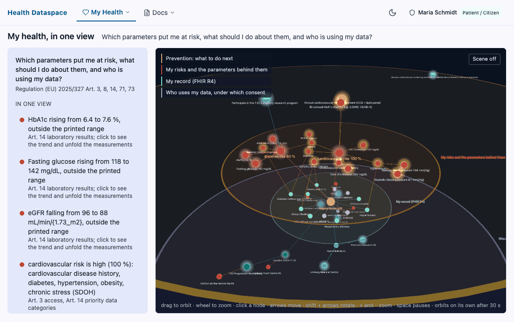
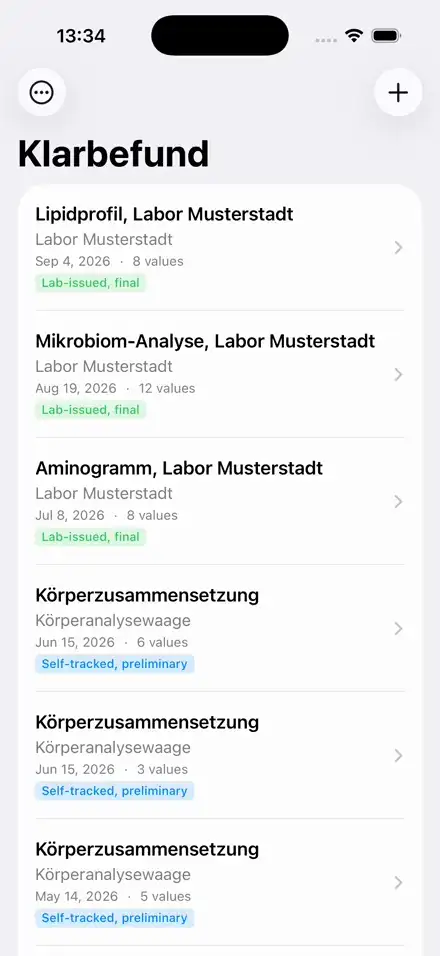
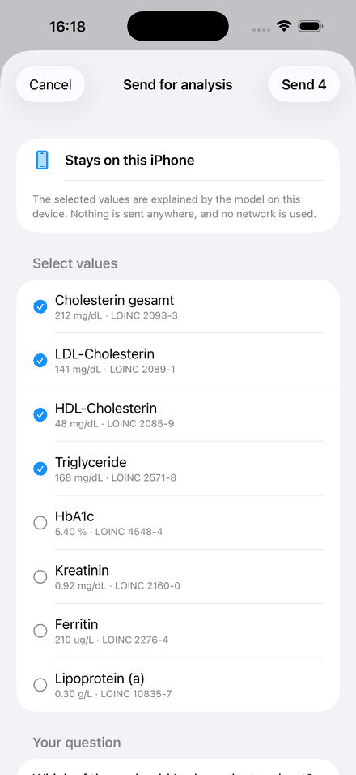
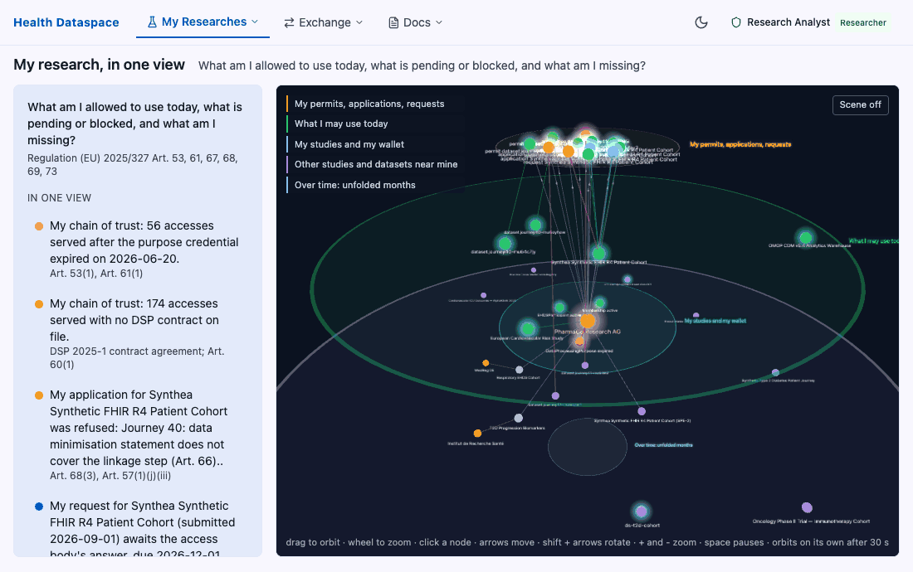
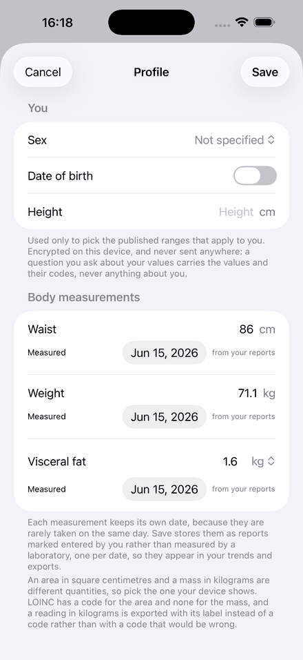

Behind: one patient's health in one view · ehds.mabu.red/overview
HL7 AI Challenge 2026 · Open Solution Award
From my own paper lab report to a governed dataspace, on HL7 FHIR.
Matthias Buchhorn, Berlin · ehds.mabu.red · github.com/ma3u
World Standards Day, 14 October 2026 · press S for notes, F for full screen
Why I built this
My results arrive as PDF or on paper. Nothing puts them into my record.
They want this data across many people, under a permit. They cannot get it.
Five years of dataspaces. So I built both halves, on FHIR.
What makes this AI different
Demo 1 · primary use · the first end of the AI
Boxes open the demo: · down: the recording
Backup · the person on the platform, recorded

Demo 1 · the app · it refuses rather than guesses
Two recognition passes, reconciled. No network needed.
The unit selects the LOINC code. A wrong code is worse than none.
Connected by QR code. Each send behind its own switch.
The medical-device line.
Invented laboratory, invented values. Join the TestFlight beta · screen by screen

Demo 1 · what leaves the phone · provenance in FHIR
| Observation | Carries |
|---|---|
| code | LOINC, or text with a data-absent-reason |
| valueQuantity | UCUM unit, comparator as printed |
| referenceRange | as the laboratory printed it |
| status | final or preliminary |
| extension | page, line, box, OCR confidence |
| component | organism as NCBI Taxonomy |
Plus DiagnosticReport, DocumentReference, Provenance. One golden bundle pins both writers.

Demo 2 · secondary use · governance in the query path
Synthetic data, real protocols: DSP 2025-1 · DCP 1.0 · HealthDCAT-AP 2.1 · ODRL 2.2 · FHIR R4 · OMOP 5.4 · · down: the recording
Backup · the researcher, recorded

Stored once · one code between both ends
FHIR stays FHIR: nodes and relationships.
OMOP is computed over the same graph, never stored twice.
One lab value, one LOINC code, both sides. No code, no answer.
What we found · why refusing matters
Same label, two units: two measurements.
A wrong code is worse than no code.
57 stool taxa: NCBI Taxonomy instead.
A transcription marked final is the failure that matters.
What we give back · five asks

Behind: the researcher's view · ehds.mabu.red/overview
Refuses to guess · provenance in FHIR · both ends · governed · open
Matthias Buchhorn · linkedin.com/in/mbuchhorn · Thank you, HL7.